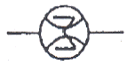
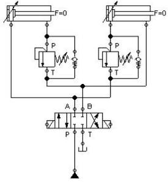
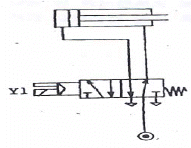
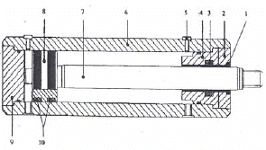
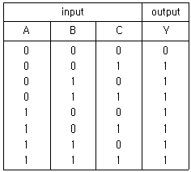
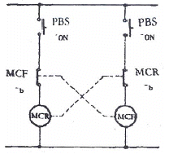

기계정비산업기사 (2006-08-16 기출문제)
1과목: 공유압 및 자동화시스템
1. 어큐뮬레이터의 용도로 옳지 않은 것은?
- 에너지의 저장
- 유압의 맥동 증대
- 충격의 흡수
- 일정 압력의 유지
(정답률: 72%)

2. 다음 에어 드라이어 중 -70℃의 저노점이 가능한 것은?
- 흡착식 드라이어
- 흡수식 드라이어
- 냉동식 드라이어
- 애프터 쿨러
(정답률: 42%)
3. 유압 카운터 밸런스 회로의 특징이 아닌 것은?
- 부하가 급격히 감소되더라도 피스톤이 급진되지 않는다.
- 일정한 배열을 유지시켜 램의 중력에 의해서 자연 낙하하는 것을 방지한다.
- 같은 치수의 복동실린더 두개를 배관하여 두 실린더의 전후진 속도를 같도록 한 회로이다.
- 카운터 밸런스 밸브는 릴리프 밸브와 체크 밸브로 구성되어 있다.
(정답률: 79%)
4. 공압 기본 논리 회로에서 입력되는 복수의 조건 중에 어느 한 개라도 입력 조건이 충족되면 출력이 되는 회로는 다음 중 어느 것인가?
- AND 회로
- OR 회로
- NOT 회로
- NOR 회로
(정답률: 88%)
5. 면적이 10cm2인 곳을 50kgf의 무게로 누를 때 면적에 작용하는 압력은?
- 5kgf/cm2
- 10kgf/cm2
- 58kgf/cm2
- 5kgf/m2
(정답률: 73%)
6. 공동현상(cavitation)의 발생 원인 중 거리가 먼 것은?
- 펌프를 규정 속도 이상으로 고속 회전 시켰을 때
- 패킹부에 공기가 흡입된 경우
- 흡입필터가 막히거나 유온이 저하된 경우
- 과부하이거나 급격히 유로를 차단한 경우
(정답률: 41%)
7. 다음 기호의 명칭은?

- 적산 유량계
- 회전 속도계
- 토크계
- 유면계
(정답률: 72%)
8. 다음 유압 회로의 명칭으로 맞는 것은?

- 시퀸스회로
- 차압회로
- 감압회로
- 재생회로
(정답률: 62%)
9. 미터인 회로와 미터 아웃 회로의 공통점을 설명한 것은?
- 릴리프 밸브를 통해 여분의 기름이 탱크로 복귀하지 않는다.
- 릴리프 밸브를 통해 여분의 기름이 탱크로 복귀하므로 유온이 떨어진다.
- 릴리프 밸브를 통해 여분의 기름이 탱크로 복귀 하므로 동력 손실이 크다.
- 릴리이프 밸브를 통해 여분의 기름이 탱크로 복귀치 않으므로 동력 손실이 있다.
(정답률: 38%)
10. 공기탱크의 역할과 거리가 먼 것은?
- 공기압력의 맥동을 평준화한다.
- 응축수를 분리시킨다.
- 압축공기를 저장한다.
- 급격한 압력강하를 시킨다.
(정답률: 79%)
11. 핸들링 중 직선적으로 부품이 이송되며 작업이 수행되어지는 핸들링은?
- 리니어 인덱싱 핸들링
- 수직 로터리 인덱싱 핸들링
- 수평 로터리 인덱싱 핸들링
- 라쳇 구동 핸들링
(정답률: 66%)
12. 열전대의 특징이 아닌 것은?
- 제베크 효과를 이용한다.
- 금속의 형상이나 치수 또는 도중의 온도변화에 영향을 받는다.
- 기존 접점에 대한 온도와 열기전력을 이용하여 온도를 측정한다.
- 보상 도선이 필요하다.
(정답률: 29%)
13. 유압동력을 직선 왕복 운동으로 변환하는 기구는?
- 유압회전모터
- 유압요동모터
- 유압실린더
- 유압축압기
(정답률: 83%)
14. PLC에서 내장된 프로그램에 따라 입력신호가 만족되면 해당 출력신호를 발생하기 위해 연속적으로 프로그램을 진행하는 과정을 무엇이라 하는가?
- 스캐닝
- 인출 싸이클
- 프로그램 카운터
- 실행 싸이클
(정답률: 41%)
15. PLC 프로그램의 최초단계인 0 스텝에서 최후 스탭까지 진행되는데 걸리는 시간을 스캔타임이라 한다. 6μs의 처리 속도를 가진 PLC가 1,000스텝을 처리하는데 걸리는 스캔타임은?
- 6 X 10-3[S]
- 6 X 10-4[S]
- 6 X 10-5[S]
- 6 X 10-6[S]
(정답률: 50%)
16. 다음 중 서미스터를 나타내는 것이 아닌 것은?
- NTC
- PNP
- CTR
- PTC
(정답률: 72%)
17. 그림의 설명으로 잘못된 것은?

- 전진 행정시보다 후진 행정 시 추력이 더 크다.
- 솔레노이드 Y1에 전기에 공급되면 실린더는 전진한다.
- 간접 작동형 밸브를 사용했다.
- 전진시보다 후진 시 속도가 빠르다.
(정답률: 36%)
18. 다음의 그림은 복동 실린더를 나타낸 것이다. 번호가 붙여진 부분 중에서 7, 8, 9번 위치의 명칭으로 맞는 것은?

- 와이퍼실-실런더배럴-피스톤실
- 앤드캡-피스톤로드-피스톤로드실
- 피스톤-피스톤실-공기빼기 스크립
- 피스톤로드-피스톤-앤드캡
(정답률: 68%)
19. 전동기 과열의 원인이 아닌 것은?
- 과부하
- 결선의 착오
- 단상운전
- 회전자 동봉의 움직임
(정답률: 45%)
20. 다음 중 핸들링(handling) 장치의 기능으로 볼 수 없는 것은?
- 부품 이송
- 가공 절삭
- 클램핑
- 공구 조정
(정답률: 53%)
2과목: 설비진단관리 및 기계정비
21. 가속도 센서의 부착 방법 중 마그네틱 고정 방식의 특징이 아닌 것은?
- 가속도계의 고정 및 이동이 용이하다.
- 작은 구조물에는 자석의 질량 효과가 크다.
- 습기는 문제가 없다.
- 장기적인 안정성이 좋다.
(정답률: 34%)
22. 산업현장에서 소음의 증가원인으로 해석할 수 있는 것은?
- 종류가 같은 기계를 출력이 큰 기계로 교체했다.
- 같은 기계로 회전속도를 낮추어 작업을 하였다.
- 밸런싱 작업을 하여 불균형을 바로 잡았다.
- 소음방지를 위해 합성수지기어로 교체하였다.
(정답률: 76%)
23. 석면과 암면 등 섬유성 재료의 흠음력을 이용해서 소음을 감소하는 장치는?
- 반사 소음기
- 충격식 소음기
- 흡진식 소음기
- 흡음식 소음기
(정답률: 81%)
24. 회전기계 진동에서 고주파의 발생 원인으로 적합한 것은?
- 오일 휠
- 미스얼라인먼트
- 언밸런스
- 유체음, 진동
(정답률: 42%)
25. 미끄럼 베어링에 그리스를 사용 할 경우 고려하지 않아도 될 사항은?
- 급유방법
- 하중
- 재질
- 용도
(정답률: 46%)
26. 다음 중 유형 고정자산이 아닌 것은?
- 토지, 건물
- 유틸리티(utility)설비
- 원료
- 생산설비
(정답률: 61%)
27. 설비보전의 표준 설정 시 직접 기능에 속하지 않는 것은?
- 설비검사
- 설비정비
- 설비수리
- 설비교체
(정답률: 73%)
28. 윤활관리의 최종적인 목적은?
- 올바른 급유
- 정기적 급유
- 고장의 감소
- 생산성 향상
(정답률: 44%)
29. 제품생산 중 만성적인 불량품이 발생되어 대책을 세우고자 한다. 불량 수정 로스(loss)에 대한 대책이 아닌 것은?
- 강제 열화를 방치한다.
- 불량품이 발생하는 모든 요인에 대하여 대책 세운다.
- 불량 현상의 관찰을 충분히 한다.
- 불량 요인의 계통을 재검토 한다.
(정답률: 64%)
30. 다음은 설비보전 조직의 기본형과 특징을 설명한 것이다. 맞는 것은?
- 집중보전은 공장의 작업요구에 대하여 충분한 인원을 동원할 수 있다.
- 지역 보전은 대수리 작업처리가 쉽다.
- 부분보전은 보전비의 획득과 관리가 쉽다.
- 절충보전은 일정작성이 곤란하다.
(정답률: 56%)
31. 다음 중 속도센서로 널리 사용되는 동전형 속도센서의 측정에 사용하는 법칙 혹은 효과는 무엇인가?
- 압전효과
- 패러데이의 전자유도 법칙
- 렌쯔의 법칙
- 오른나사의 법칙
(정답률: 64%)
32. 외력이나 외부토크가 연속적으로 가해짐으로써 생기는 진동을 무엇이라고 하는가?
- 강제진동
- 자유진동
- 고유진동
- 공진
(정답률: 76%)
33. 설비의 이상 진단방법 중 정밀진단에 속하는 것은?
- 주파수에 의한 판정
- 경험에 의한 판정
- 절대값 기준에 의한 판정
- 상대값 기준에 의한 판정
(정답률: 59%)
34. 다음 중 회전기계의 진단을 위하여 적용되는 기술은 무엇인가?
- FEM 해석 기술
- 진동 진단 기술
- 잔류응력 계측기슬
- 정지응력 계측기술
(정답률: 57%)
35. 정현파의 경우 평균값은 피크값의 몇 배인가?
- 2/π
- π
- π/2
- 2π
(정답률: 56%)
36. 설비의 고장율 곡선에서 시간이 지날수록 고장율이 감소하며 예방보전이 거의 필요없는 고장기는?
- 초기 고장기
- 우발 고장기
- 마모 고장기
- 노후 고장기
(정답률: 58%)
37. 다음 중에서 진동의 기본량에 대한 설명 중 옳은 것은?
- 진폭은 일정한 정점에 대하여 다른 정점의 순간적인 위치 및 시간의 지연이다.
- 진동수 f는 진동 주기 T의 역수이다.
- 위상이란 진동의 크기를 알아내는데 매우 중요하며, 진폭표시의 파라미터로서의 변위, 속도, 가속도가 있다.
- 주파수란 단위시간당 사이클의 횟수에 대한 역수이다.
(정답률: 37%)
38. 다음 회전기계의 이상 현상에서 발생 주파수 영역이 저주파수가 아닌 것은?
- 압력 맥동
- 언밸런스(unbalance)
- 미스얼라이먼트(misalignment)
- 풀림
(정답률: 46%)
39. 설비의 열화 패턴에서 개선 개량이 절대 필요하며, 예비품 관리가 중요하고 유효수명이라고 하는 것으로 맞는 것은?
- 우발 고장기
- 초기 고장기
- 돌발 고장기
- 마모 고장기
(정답률: 43%)
40. 설비관리의 시스템을 구성하는 기본적 요소 중 기계장치나 설비에 해당하는 것은?
- 투입
- 처리기구
- 관리
- 피드백
(정답률: 65%)
3과목: 공업계측 및 전기전자제어
41. 10진수 -7을 2의 보수로 나타내면 다음 중 어는 것인가?
- 0111
- 1000
- 1001
- 1011
(정답률: 41%)
42. 정류기의 평활회로로 사용되는 여파기의 종류는 어느 것 인가?
- 저역 여파기
- 고역 여파기
- 대역 여파기
- 대역소거 여파기
(정답률: 39%)
43. 제어량이 온도, 압력, 유량 및 액면등과 같은 일반 공업량 일 때의 제어방식을 무엇이라고 하는가?
- 프로그램제어
- 프로제스제어
- 시퀸스제어
- 추종제어
(정답률: 65%)
44. 다음 진리표의 출력식은?

- Y = ABC
- Y = A+B+C
- Y = AB+C
- Y = A+BC
(정답률: 64%)
45. 전기식 조절밸브의 구동신호로 사용되는 전류신호의 크기는 몇(mA) DC인가?
- 0.2 - 1.0
- 0.4 - 2.0
- 1.0 - 4.0
- 4.0 - 20
(정답률: 30%)
46. 다음 중에는 방사 온도계가 아닌 것은?
- 광 고온계
- 2색 고온계
- 서모 파일
- 유기 액체 온도계
(정답률: 39%)
47. 다음 중 노이즈 대책이 아닌 것은?
- 실드의 사용
- 비접지
- 접지
- 필터의 사용
(정답률: 68%)
48. 제어밸브는 다음 중 어디에 속하는가?
- 검출기
- 변환기
- 조절기
- 조작기
(정답률: 69%)
49. 역률 80[%]인 부하의 전력이 400[KW]이라면 무효전력[KVar]은 얼마인가?
- 200
- 300
- 400
- 500
(정답률: 46%)
50. 그림과 같은 회로를 어떠한 회로라 하는가?

- 자기유지 회로
- 인터록 회로
- 정지 회로
- 병렬 회로
(정답률: 61%)
51. 가동 코일형 계기의 지시는?
- 평균값
- 파형값
- 피크값
- 실효값
(정답률: 22%)
52. 다음 중 유도 전동기의 보호방식에 속하지 않는 것은?
- 전개형
- 보호형
- 방수형
- 방진형
(정답률: 58%)
53. 회전 방향을 바꿀 수 없고 기동 토크와 효율이 낮으나 구조가 간단하여 전자밸브, 녹음기 및 가정용 전동기에 많이 사용되는 것은?
- 반발 기동형 전동기
- 셰이딩 코일형 전동기
- 콘덴서 기동형 전동기
- 분상 기동형 전동기
(정답률: 53%)
54. 누전 차단기의 설치 및 취급에 대한 사항과 관계가 먼 것은?
- 1개월에 1회 정도 테스터 버튼에 의하여 동작상태를 확인한다.
- 누전 차단기를 설치하면 부하기기는 접지하지 않는다.
- 습기나 부식성이 있는 장소는 피한다.
- 전원은 전원측에 부하를 부하측에 확실히 접속한다.
(정답률: 60%)
55. 교류 전류계의 일반적인 지시값은?
- 순시치
- 최대치
- 평균치
- 실효치
(정답률: 56%)
56. 다음 증폭기기 중 기계식인 것은?
- 사이리스터
- 앰플리다인
- 진공관
- 안내밸브
(정답률: 52%)
57. 신호 전송 라인에서 노이즈의 대책으로 실드 선을 사용하면 어떠한 효과가 있는가?
- 임피던스의 경감
- 유도장애 경감
- 자기유도의 제거
- 정전유도의 제거
(정답률: 40%)
58. 궤한 제어계(feedback control system)의 일반적인 특징이다. 장점이 아닌 것은?
- 생산품질의 향상이 현저하며 균일한 제품을 얻을 수 있다.
- 생산 속도를 상승시키고 생산량을 크게 증대 시킬 수 있다.
- 제어장치의 운전, 수리에 고도의 지식이 있어야 한다.
- 원료, 연료 및 동력을 절약하고, 인건비를 줄일 수 있다.
(정답률: 63%)
59. 어떤 정류회로의 출력 직류전압이 20[V]이고 맥동 전압이 0.1[V]였다면 이 정류회로의 맥동율은 몇 %인가?
- 0.5
- 1
- 1.5
- 2
(정답률: 38%)
60. 다음 압력계의 종류 중에서 탄성식은?
- 침종식
- 벨로스식
- 경사관식
- 압전기식
(정답률: 73%)
4과목: 기계정비 일반
61. 더블 너트라고도 하며 시초에 앏은 너트로 조이고 다시 정규너트를 사용하여 조임하는 체결방식은?
- 홈붙이너트에 의한 방법
- 절삭너트에 의한 방법
- 로크너트에 의한 방법
- 특수너트에 의한 방법
(정답률: 68%)
62. 원심펌프 운전 시 베어링의 과열 현상이 발생된 이유는?
- 가소성이 큰 축이음을 사용하였다.
- 베어링 케이스에 그리스를 1/2 – 1/3 충진 하였다.
- 펌프 토출구에 슬루스 밸브를 설치하였다.
- 축심과 축 중심이 0.5mm 이하의 차가 되도록 설치하였다.
(정답률: 36%)
63. 양 끝에 오른나사와 왼나사가 있어 배관 지지장치의 높낮이를 조절할 때 사용되는 너트는?
- 홈붙이너트
- 나비너트
- 터언버클
- T 너트
(정답률: 28%)
64. 축 고장의 원인 중 조립 정비불량에 속하지 않는 것은?
- 풀리, 기어, 베어링 등 끼워맞춤 불량
- 휜 축 사용
- 재질 불량
- 급유 불량
(정답률: 53%)
65. 정지 중 펌프의 분해 점검용으로 펌프 운전중은 필요하지 않으므로 차단성이 좋고 전개 시 손실 수두가 적은 펌프 흡입 밸브로 적합한 것은?
- 수동 슬루스 밸브
- 첵크 밸브
- 글로브 밸브
- 콕크 밸브
(정답률: 28%)
66. 펌프 운전 중 발생되는 캐비테이션의 방지법으로 적합하지 않은 것은?
- 흡입양정을 작게 한다.
- 흡입구를 작게 한다.
- 펌프의 회전수를 낮게 한다.
- 양흡입의 펌프를 사용한다.
(정답률: 63%)
67. 버니어캘리퍼스의 사용상 주의점이 아닌 것은?
- 측정 시 측정 면의 이물질을 제거한다.
- 눈금을 읽을 때 눈금으로부터 직각위치에서 읽는다.
- 측정 시 본척과 부척의 영점을 일치시킨다.
- 정압 장치가 있으므로 측정력은 제한이 없다.
(정답률: 78%)
68. 다음 중 밸브의 손잡이를 90° 회전시킴으로 유로를 신속히 개폐할 수 있는 밸브의 종류는?
- 앵글 밸브
- 슬루우스 밸브
- 체크 밸브
- 콕크 밸브
(정답률: 50%)
69. 끼워 맞춤의 종류가 아닌 것은?
- 헐거운 끼워 맞춤
- 최소 끼워 맞춤
- 억지 끼워 맞춤
- 중간 끼워 맞춤
(정답률: 70%)
70. 다음 중 압축기 밸브 플레이트 교환 시 잘못된 것은?
- 마모된 플레이트는 뒤집어서 재사용 한다.
- 교환시간이 되었으면 사용한계의 기준치 내에서도 교환한다.
- 마모한계의 달하였을 때는 파손되지 않아도 교환한다.
- 두께의 0.3mm 이상 마모되면 교환한다.
(정답률: 71%)
71. 송풍기의 냉각방법에 의한 분류가 아닌 것은?
- 공기냉각형
- 재킷냉각형
- 풍로흡입형
- 중간냉각다단형
(정답률: 50%)
72. 베어링의 안지름 기호가 08일 때 베어링의 안지름은 몇 mm인가?
- 8mm
- 16mm
- 40mm .
- 80mm
(정답률: 54%)
73. 강재의 얇은 판으로 홈의 간극을 점검하고 측정하는데 사용하는 측정기는?
- 틈새 게이지 .
- 높이(height) 게이지
- 블록 게이지
- 실린더 게이지
(정답률: 64%)
74. 다음 중 편심펌프가 아닌 것은?
- 다단펌프
- 베인펌프
- 롤러펌프
- 로터리 플랜지 펌프
(정답률: 29%)
75. 부러진 볼트를 빼는데 사용되는 공구는?
- 토크랜치
- 짐크로
- 임팩트렌치
- 스크류엑스트랙터
(정답률: 79%)
76. 다음 중 왕복식 압축기의 장점은?
- 고압 발생이 가능하다.
- 설치 면적이 좁다.
- 윤활이 쉽다.
- 압력 맥동이 없다.
(정답률: 72%)
77. 기어의 이 부분이 파손되는 주 원인이 아닌 것은?
- 과부하 절손
- 피로 파손
- 균열
- 마모
(정답률: 42%)
78. 회전축을 1회전 시켰을 때 다이얼게이지 눈금이 0.6mm 이동하였다. 편심량은?
- 0.3mm
- 0.6mm
- 1.2mm
- 0.06mm
(정답률: 39%)
79. 유량 180ℓ/min, 100m 높이로 물을 보내고자 한다. 펌프에 필요한 동력은 약 몇 KW인가?
- 1.8kW
- 2.9kW
- 4kW
- 176.5kW
(정답률: 40%)
80. 원심형 통풍기(fan)의 정기 검사 항목이 아닌 것은?
- 흡기, 배기의 능력
- 통풍기의 주유상태
- 덕트의 마모상태
- 베어링의 진동상태
(정답률: 36%)